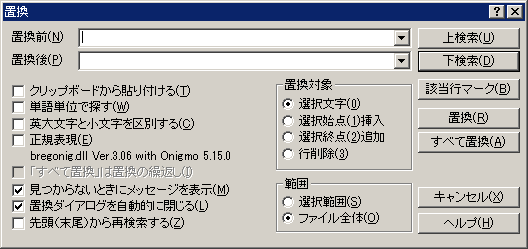

置換
文字列置換用のダイアログを開きます。文字列の置換を行います。
検索にもあるオプションは、検索と同じです。
(置換前) …… 置換前の文字列を指定します。
(置換後) …… 置換後の文字列を指定します。
□
クリップボードから貼り付ける
置換後の文字列のかわりに、クリップボードのテキストで代用します。
□
単語単位で探す
□
英大文字と小文字を区別する
□
正規表現 ※
□
「すべて置換」は置換の繰返し(sakura:1.5.15.0以降)
正規表現を使用する場合にのみ指定可能です。
旧「すべて置換」及び「すべて行置換」の切り替え機能に相当します。
■
見つからないときにメッセージを表示
■
置換ダイアログを自動的に閉じる
□
先頭（末尾）から再検索する
<置換対象>
置換前の文字列と、置換後の文字列の扱いを設定します。
◎選択文字列
置換前の文字列を、置換後の文字列に置き換えます。
○選択始点挿入
置換前の文字列の前に、置換後の文字列を挿入します。
○選択終点追加
置換前の文字列の後に、置換後の文字列を追加します。
○行削除(sakura:2.2.0.0以降)
置換前の文字列が含まれるロジック行を削除します。
<範囲>
○選択範囲
◎ファイル全体
[上検索] ボタン …… カーソル位置よりも前を検索します。
[下検索] ボタン …… カーソル位置よりも後ろを検索します。
[該当行マーク] ボタン …… 検索した行をすべてブックマークに設定します。
[置換] ボタン …… 下検索で見つかった検索語を置換し、次の検索語に移動します。
[すべて置換] ボタン … ファイル全体で見つかった検索語をすべて置換します。
[すべて行置換] ボタン … ファイル全体で見つかった検索語をすべて置換します。(sakura:1.5.10.0以降)sakura:1.5.15.0よりオプションになりました。

 ヒント
ヒント
「すべて置換」は置換の繰返しのオプションは、位置指定(行頭指定^や単語区切り指定\b)を含むパターンを消去(置換後の文字列が空)する場合に結果が異なります。
(例)「ababab」に対して「^ab」を「」に置換すると
有効時：「ababab」が削除されます。
無効時：行頭の「ab」だけが削除されます。
※正規表現は、正規表現ライブラリによって実現していますので、お持ちでない方は別途入手していただく必要があります。
■マクロ構文
・構文: ReplaceDialog( );
・記録: 実行した[上検索]、[下検索]、[置換]、[すべて置換]で記録